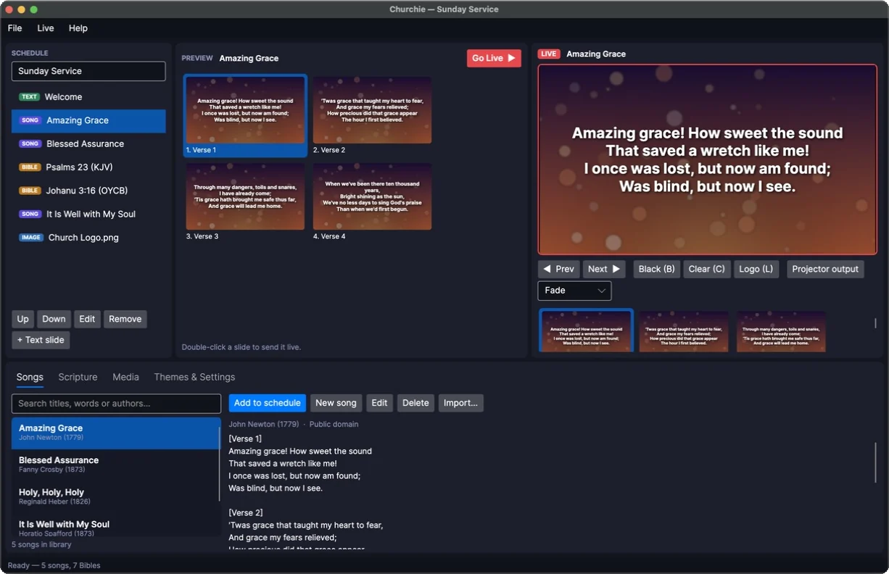
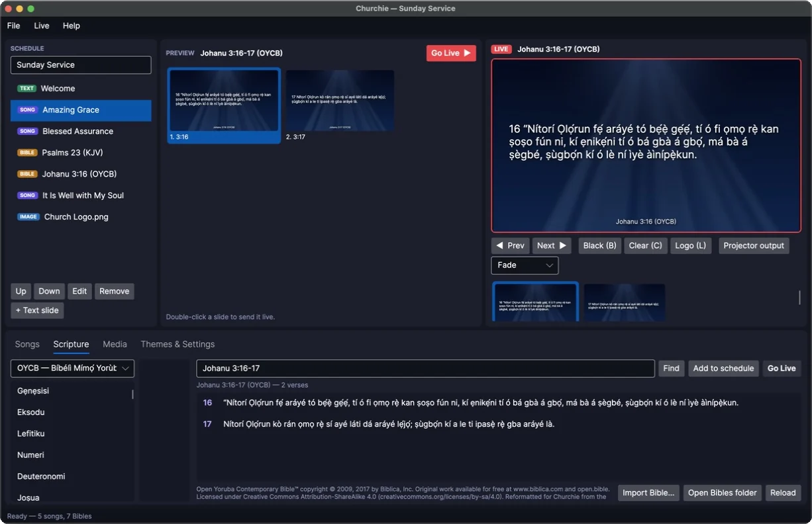
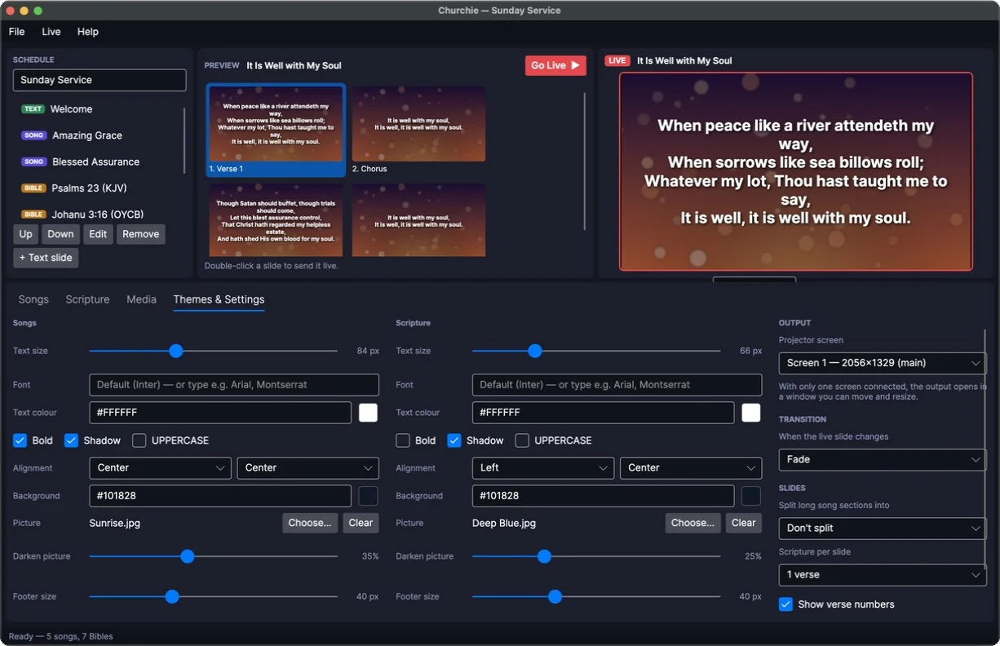
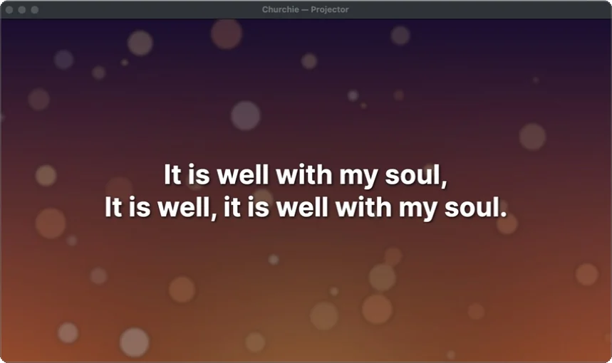

Songs and scripture on the big screen
Churchie is free presentation software for church services. Build the order of service, put lyrics and Bible verses on the projector, and move through them with one click. It runs on Windows, Mac and Linux, with no internet needed on Sunday.
Version 0.1, free. All downloads
How a service runs in Churchie
Everything happens in one window, laid out the way worship teams already work: what's coming up on the left, what you're checking in the middle, and what the congregation sees on the right.

-
Plan the service
Add songs, Bible readings, announcements and pictures to the schedule in the order you'll use them. It saves itself as you go.
-
Check it in Preview
Click anything in the schedule to see its slides before the congregation does.
-
Go live
Double-click a slide or press Go Live. Move on with Next, the arrow keys or a presentation clicker, and each change fades smoothly.
Seven Bibles, including Yoruba
Type a reference the way you'd say it, like jn 3 16, 1 Cor 13:4-7 or Psalm 23, and the verses are ready to show. Yoruba book names work too: try Johanu 3:16 or Saamu 23.
- KJV King James
- WEB World English
- BSB Berean Standard
- ASV American Standard
- BBE Basic English
- YLT Young's Literal
- OYCB Yoruba Contemporary
Have a licensed copy of another version? Add it with Import Bible.

Make it look like your church
Choose a background picture, font, size and colour for songs, and a separate look for scripture. Changes show on the screen straight away, and long verses shrink to fit so nothing runs off the edge.

Calm, confident projection
The projector window opens full screen on your second display. Every change cross-fades instead of jumping, and the buttons you need in a hurry are one key away.
- Black B blanks the screen
- Clear C hides the words but keeps the background
- Logo L shows your church logo
- Fade speed: cut, quick, normal or slow

Also included
- Song library
- Search by title, words or author. Paste lyrics and Churchie splits them into slides.
- Import songs
- Bring in plain-text lyrics or OpenLyrics files from other programs.
- Saves itself
- The service order is saved after every change, so a power cut won't lose it.
- Works offline
- Songs, Bibles and pictures live on your computer. No account and no internet needed.
- Clicker friendly
- Page Up and Page Down move the slides, so most presentation remotes just work.
- Free
- No subscription and no watermark. The code is open on GitHub.
Ready for Sunday?
Free for Windows, Mac and Linux. Setup takes about two minutes.
Questions
Is Churchie really free?
Yes. There's no subscription, no watermark and no account to create. The source code is public on GitHub.
Which computers does it run on?
Windows 10 and 11 (64-bit), macOS 12 or newer on Apple Silicon or Intel Macs, and 64-bit Linux. Everything Churchie needs comes in the download, so there's nothing else to install.
Do I need internet during the service?
No. Songs, Bibles and pictures are all stored on your computer.
Can I use the NIV, Amplified or NKJV?
Those versions are copyrighted, so Churchie can't include them. If your church has a licensed copy as a Zefania, OpenSong or OSIS file, add it with Import Bible in the Scripture tab.
How do I connect a projector or TV?
Connect it as a second screen set to extend your desktop (not mirror it), then press Projector output. The projector section of the guide walks through it.
Can I bring my songs over from EasyWorship?
Not directly yet. You can paste lyrics into the song editor, or import plain-text and OpenLyrics files. A direct EasyWorship import is planned.